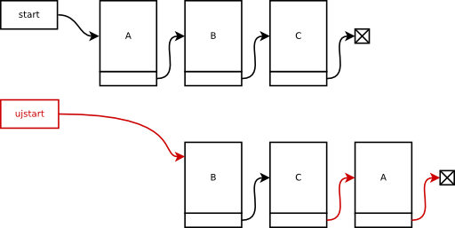

9. hét: láncolt listák
Czirkos Zoltán, Nagy Gergely, Pohl László · 2015.02.18 · Frissítve: 2015.02.15
Gyakorlófeladatok a 9. előadás anyagához kapcsolódóan.
Ezen az oldalon rengeteg feladat található a gyakorláshoz. Egy részük megoldással együtt, míg a többi anélkül. A gyakorlófeladatok megoldásához elvileg elegendő az az ismeretanyag, amely az előadáson szerepelt. Természetesen a megoldás kitalálásához szükség lehet arra a rálátásra és tapasztalatra, amit a gyakorlatok és a laborok adnak. A feladatok témakörök szerinti csoportosítása viszont ettől függetlenül az előadást követi.
Felhívjuk a figyelmed arra, hogy a megoldások olvasgatása lényegében nulla tapasztalatot és gyakorlatot ad, így az eredményes számonkérésekhez nem tud hozzásegíteni! A megoldásokat akkor nézd csak meg, ha a saját megoldás elkészítése közben elakadsz. Lásd itt.
1Egy irányban láncolt listák
Egyszeresen láncolt lista másolása
Definiálj egy irányban láncolt lista elemeinek tárolására alkalmas adatstruktúrát, a lista 20 elemű int tömb adattaggal rendelkezik! Írj függvényt, amely paraméterként kapja egy ilyen elemekből felépülő lista címét! A függvény adja vissza a lista másolatát (a másolt lista kezdőelemének címét)! (Vagyis hozzon létre egy másik listát, amely ugyanazokat az adatokat tartalmazza ugyanolyan sorrendben, mint a paraméterként átvett!)
Megoldás
typedef struct elem {
int adat[20];
struct elem *next;
} elem;
elem *masol(elem *start) {
elem *ujstart, *ujfuto;
for (ujstart = ujfuto = NULL; start != NULL; start = start->next) {
elem *p = (elem*)malloc(sizeof(elem));
*p = *start;
p->next = NULL;
if (ujstart==NULL)
ujstart = ujfuto = p;
else {
ujfuto->next = p;
ujfuto = ujfuto->next;
}
}
return ujstart;
}
Lista másolása megfordítva
Írj függvényt, amely lemásol egy listát, de úgy, hogy a másolat az eredeti fordítottja legyen! Ötlet: ehhez használható az előző feladat megoldása, és a gyakorlati óráról származó lista megfordítása ötlet.
Nincs benne ismétlés
Írj függvényt, amely úgy módosít egy paraméterként kapott listát, hogy abban ne legyen kétszer egymás után ugyanaz az elem! (Pl. ha a bemeneti lista 1,1,5,7,4,4,1,5,5,5,6, a megváltozott lista tartalma legyen 1,5,7,4,1,5,6).
Mindegyik elem csak egyszer
Írj függvényt, amely úgy módosít egy paraméterként kapott listát, hogy abban minden elem csak egyszer szerepeljen! Térjen vissza a függvény az esetleg megváltozott lista eleje pointerrel! (Pl. ha a bemeneti lista 1,5,7,4,4,1,5,6, a megváltozott lista tartalma legyen 1,5,7,4,6).
Mindegyik elem csak egyszer – új listával
Írj függvényt, amely létrehoz egy listát olyan módon, hogy az a paraméterként kapott lista minden elemét csak egyszer tartalmazza. (Vagyis a feladat ugyanaz, mint az előbb, csak nem módosítani kell a listát, hanem létrehozni egy újat.)
Lista közepe
Adott egy láncolt lista, amelyről tudjuk, hogy páratlan számú eleme van. Meg kell keresni a középsőt, és adni rá egy pointert – de úgy, hogy a listát csak egyetlen egyszer szabad bejárni! (Tehát ha megszámoljuk, mekkora, és utána újra az elejéről elindulva megkeressük a középsőt, az nem jó.)
Megoldás
Az ötlet egy lemaradó pointer. Legyen egy pointerünk (nyúl), amelyik kettesével lépked a listán, és egy másik (teknős), amely egyesével! Írni kell egy ciklust, amely végigszalad a nyúllal a listán; amikor a nyúl a végére ért, a teknős a közepén tart.
Beszúrás az ötödik helyre
Írj függvényt, amely egy listába beszúr egy elemet úgy, hogy az az ötödik legyen! (A számozás 1-től indul.) Ha a lista rövidebb, akkor kerüljön a végére az új elem. A függvénynek paraméterei legyenek a lista elejére mutató pointer és a beszúrandó adat. Visszatérési értéke legyen a lista elejét mutató pointer.
Definiáld az egyszeresen láncolt lista adatszerkezetét úgy, hogy az max. 50 karakter hosszúságú neveket tároljon! Készíts rajzot, amely a listakezelést mutatja számozott lépésekkel! Írj rövid főprogramot, amelyben definiálsz egy listát. Feltételezve, hogy a lista fel van töltve, szúrd be az 5. helyre a Mézga Géza nevet!
Megoldás
typedef struct Lista {
char nev[50+1];
struct Lista *kov;
} Lista;
Lista* beszur_5(Lista *eleje, char *nev) {
Lista *iter, *uj;
int i;
uj=(Lista*) malloc(sizeof(Lista));
strcpy(uj->nev, nev);
if (eleje==NULL) {
uj->kov=NULL;
return uj;
}
for (iter=eleje, i=1; iter->kov!=NULL && i<4; iter=iter->kov, i++)
;
uj->kov=iter->kov;
iter->kov=uj;
return eleje;
}
Lista *l=.....;
l=beszur_5(l, "MezgaGeza");
Ötödik elem törlése
Írj függvényt, amely egy lista ötödik elemét törli! (A számozás 1-től indul.) Ha nincs ötödik elem, akkor ne történjen semmi. A függvénynek egy paramétere legyen csak, az a lista elejére mutató pointer.
Definiáld az egyszeresen láncolt lista adatszerkezetét úgy, hogy max. 30 karakter hosszúságú szavakat tároljon! Készíts rajzot, amely a listakezelést mutatja számozott lépésekkel! Írj rövid főprogramot, amelyben definiálsz egy listát. Feltételezve, hogy a lista fel van töltve, töröld ki a függvénnyel az 5. elemet!
Megoldás
typedef struct Lista {
char szo[30+1];
struct Lista *kov;
} Lista;
void lista_torol_5(Lista *lista) {
Lista *iter, *negyedik, *otodik;
int i;
for (iter=lista, i=1; iter!=NULL && i<4; iter=iter->kov, ++i)
;
negyedik=iter;
if (negyedik==NULL) return;
otodik=negyedik->kov;
if (otodik==NULL) return;
negyedik->kov=otodik->kov;
free(otodik);
}
Lista *l=.....;
lista_torol_5(l);
Párosak törlése
Írj függvényt, amely paraméterként vesz át egy számokból álló listát, és törli abból a páros számokat! Ha a lista eredeti tartalma 2,3,4,5,6, akkor a módosított lista 3,5 kell legyen.
Definiáld az egyszeresen láncolt lista adatszerkezetét úgy, hogy az egész számokat tartalmazzon! Készíts rajzot, amely a listakezelést mutatja számozott lépésekkel! Írj programrészt, amely meghívja egy listára a függvényt!
Megoldás
typedef struct Lista {
int szam;
struct Lista *kov;
} Lista;
Lista *parosakat_torol(Lista *eleje) {
Lista *iter, *lemarado;
iter = eleje;
lemarado = NULL;
while (iter!=NULL) {
if (iter->szam%2 == 0) {
Lista *kov = iter->kov;
if (lemarado!=NULL)
lemarado->kov = kov;
else
eleje = kov;
free(iter);
iter = kov;
} else {
lemarado = iter;
iter = iter->kov;
}
}
return eleje;
}
Lista *eleje = ..........;
eleje = parosakat_torol(eleje);
Beszúrás adott helyekre
Írj függvényt, amely paraméterként vesz át egy számokból álló listát, és minden páros szám elé beszúr egy listaelemet, amely annak ellentettjét tartalmazza! Például ha az eredeti lista 2,3,4,5, akkor a módosított -2,2,3,-4,4,5 legyen.
Definiáld az egyszeresen láncolt lista adatszerkezetét úgy, hogy az egész számokat tartalmazzon! Készíts rajzot, amely a listakezelést mutatja számozott lépésekkel! Írj programrészt, amely létrehoz két listaelemet, és meghívja a keletkező listára a függvényt.
Megoldás
typedef struct Lista {
int szam;
struct Lista *kov;
} Lista;
Lista *parosakat_duplaz(Lista *eleje) {
Lista *iter, *lemarado;
for (iter = eleje, lemarado = NULL;
iter != NULL;
lemarado = iter, iter = iter->kov) {
if (iter->szam%2 == 0) {
Lista *uj = (Lista *) malloc(sizeof(Lista));
uj->szam = -iter->szam;
uj->kov = iter;
if (lemarado!=NULL)
lemarado->kov = uj;
else
eleje = uj;
}
}
return eleje;
}
Lista *eleje = .............;
eleje = parosakat_duplaz(eleje);
Elejéről a végére
Írj függvényt, amely egy lista legelső elemét a lista végére helyezi át! (Például az 1,2,3,4,5 listából így 2,3,4,5,1 lesz.) Ha kettőnél kevesebb elem van, akkor ne csináljon semmit.
Definiáld az egyszeresen láncolt lista adatszerkezetét úgy, hogy egész számokat tartalmazzon! Készíts rajzot, amely a listakezelést mutatja számozott lépésekkel! Írj programrészt, amely létrehoz két listaelemet, és a függvénnyel áthelyezi az első elemet a lista végére!
Megoldás
typedef struct Lista {
int szam;
struct Lista *kov;
} Lista;
Lista *elso_vegere(Lista *elso) {
Lista *iter, *masodik;
if (elso==NULL) return;
if (elso->kov==NULL) return;
for (iter=elso; iter->kov!=NULL; iter=iter->kov)
;
masodik=elso->kov;
iter->kov=elso;
elso->kov=NULL;
return masodik;
}
Lista *eleje;
eleje=(Lista*) malloc(sizeof(Lista));
eleje->szam=3;
eleje->kov=(Lista*) malloc(sizeof(Lista));
eleje->kov->szam=4;
eleje->kov->kov=NULL;
eleje = elso_vegere(eleje);
Végéről az elejére
Írj függvényt, amely egy lista utolsó elemét a lista elejére helyezi át! (Például az 1,2,3,4,5 listából így 5,1,2,3,4 lesz.) Ha kettőnél kevesebb elem van, akkor ne csináljon semmit.
Definiáld az egyszeresen láncolt lista adatszerkezetét úgy, hogy az valós számokat tartalmazzon! Készíts rajzot, amely a listakezelést mutatja számozott lépésekkel! Írj programrészt, amely létrehoz két listaelemet, és meghívja a keletkező listára a függvényt.
Megoldás
typedef struct Lista {
double szam;
struct Lista *kov;
} Lista;
Lista *utolso_elore(Lista *eleje) {
Lista *iter, *utolso;
if (eleje==NULL) return;
if (eleje->kov==NULL) return;
for (iter=eleje; iter->kov->kov!=NULL; iter=iter->kov)
;
utolso=iter->kov;
utolso->kov=eleje;
iter->kov=NULL;
return utolso;
}
Lista *eleje;
eleje=(Lista*) malloc(sizeof(Lista));
eleje->szam=3;
eleje->kov=(Lista*) malloc(sizeof(Lista));
eleje->kov->szam=4;
eleje->kov->kov=NULL;
eleje = utolso_elore(eleje);
Fordított listák
Definiálj egy irányban láncolt lista elemeinek tárolására alkalmas adatstruktúrát, a lista valós típusú adattaggal rendelkezik! Írj függvényt, amely paraméterként kapja két, ilyen elemekből felépülő lista címét! A függvény tegye át a két lista elemeit fordított sorrendben egy harmadik listába, és ennek a listának a kezdőcímét adja vissza! (Ne foglalj memóriát, hanem az eredeti listaelemek pointereinek átállításával oldd meg a feladatot!) Például ha a két bemenő lista elemei: {1.0, 3.0, 5.0} és {2.0, 4.0, 6.0}, akkor a kimenő lista {6.0, 4.0, 2.0, 5.0, 3.0, 1.0} legyen!
Megoldás
typedef struct elem {
double adat;
struct elem *next;
} elem;
elem *forditvafuz(elem *lista1, elem *lista2) {
elem *cel = NULL;
while (lista1 != NULL) {
elem *temp = lista1->next;
lista1->next = cel;
cel = lista1;
lista1 = temp;
}
while (lista2 != NULL) {
elem *temp = lista2->next;
lista2->next = cel;
cel = lista2;
lista2 = temp;
}
return cel;
}
Páratlanok duplázása
Definiálj két irányban láncolt lista elemeinek tárolására alkalmas adatstruktúrát, a lista pozitív egész számokat tárol! Írj függvényt, amely paraméterként kapja egy ilyen elemekből felépülő, mindkét végén strázsával lezárt lista címét! A függvény duplázzon meg minden olyan listaelemet, amely páratlan számot tartalmaz, vagyis hozzon létre és fűzzön be minden ilyen listaelem elé vagy mögé egy új listaelemet, melybe a páratlan értéket átmásolja!
Megoldás
typedef struct elem {
int adat;
struct elem *prev,*next;
} elem;
void duplaz(elem *start) {
for (start = start->next; start->next != NULL; start = start->next) {
if (start->adat % 2 == 1) {
elem *p = (elem*)malloc(sizeof(elem));
*p = *start;
p->next = start;
p->next->prev = p;
p->prev->next = p;
}
}
}
Rendezett beszúrás
Hozz létre típust, mely alkalmas egészek láncolt listában való tárolására! Írj függvényt, amely átvesz egy NULL-terminált, növekvően rendezett listát a fenti típusból, és egy új számot. A számot úgy szúrja a listába, hogy annak rendezettsége megmaradjon. A működés áttekintéséhez készíts ábrát! Egy másik függvénnyel gondoskodj a lista felszabadításáról is. Az elkészült függvények alkalmazását rövid programrészlettel szemléltesd; a listát feltöltöttnek tekintheted.
Megoldás
typedef struct listaelem {
int adat;
struct listaelem *kov;
} listaelem;
listaelem *beszur(listaelem *elso, int ertek) {
listaelem *futo, *lemarado, *uj;
uj=(listaelem *)malloc(sizeof(listaelem));
uj->adat=ertek;
if (elso == NULL || elso->adat > ertek) {
uj->kov=elso;
elso=uj;
}
else {
for (futo=elso; futo != NULL && futo->adat <= ertek; futo=futo->kov)
lemarado=futo;
uj->kov=futo;
lemarado->kov=uj;
}
return elso;
}
void felszab(listaelem *elso) {
listaelem *futo=elso, *lemarado;
while (futo != NULL) {
lemarado=futo;
futo=futo->kov;
free(lemarado);
}
}
listaelem *elso=NULL;
elso = beszur(elso, 5);
felszab(elso);
Listák összefűzése
Hozz létre típust, mely alkalmas tetszőleges méretű szavak láncolt listában való tárolására! (A szavak helyét dinamikusan kell kezelni!) Írj függvényt, amely átvesz két NULL-terminált listát a fenti típusból, és az első lista végéhez fűzi a másodikat. A függvény az új lista kezdőcímével térjen vissza; feltételezhetjük, hogy az átvett eredeti listákat és kezdőcímeiket a hívás helyén már nem használjuk tovább. A függvény akkor is helyesen működjön, ha bármelyik lista üres! A működés áttekintéséhez készíts ábrát! Egy másik függvénnyel gondoskodj a lista felszabadításáról is. Az elkészült függvények alkalmazását rövid programrészlettel szemléltesd; a listákat feltöltöttnek tekintheted.
Megoldás
typedef struct listaelem {
char *szo;
struct listaelem *kov;
} listaelem;
listaelem *osszefuz(listaelem *elso, listaelem *masodik) {
listaelem *futo;
if (elso == NULL)
return masodik;
else {
for (futo=elso; futo->kov != NULL; futo=futo->kov);
futo->kov=masodik;
}
return elso;
}
void felszab(listaelem *elso) {
listaelem *futo=elso, *lemarado;
while (futo != NULL) {
lemarado=futo;
futo=futo->kov;
free(lemarado->szo);
free(lemarado);
}
}
listaelem *egy, *ket, *uj;
uj=osszefuz(egy, ket);
felszab(uj);
Beszúrás véletlenszerű helyre
Hozz létre típust, mely alkalmas valós számok láncolt listában való tárolására! Írj függvényt, amely átvesz egy NULL-terminált listát a fenti típusból, és egy új számot. A számot véletlenszerűen kiválasztott helyre szúrja a listába, tehát az a végére és az elejére is kerülhet! A működés áttekintéséhez készíts ábrát! Az elkészült függvény alkalmazását rövid programrészlettel szemléltesd; a listát feltöltöttnek tekintheted.
Megoldás
typedef struct listaelem {
double adat;
struct listaelem *kov;
} listaelem;
int szamol(listaelem *elso) {
int i;
for (i=0; elso != NULL; i++, elso=elso->kov);
return i;
}
void veletlenbe(listaelem **elso, double ertek) {
int i, n;
listaelem *futo, *uj=(listaelem *)malloc(sizeof(listaelem));
uj->adat=ertek;
n=rand()%(szamol(*elso)+1);
if (n == 0) {
uj->kov=*elso;
*elso=uj;
}
else {
for (futo=*elso, i=1; i<n; futo=futo->kov, i++);
uj->kov=futo->kov;
futo->kov=uj;
}
}
listaelem *elso=NULL;
veletlenbe(&elso, 2.71);
Hány különböző?
Adott az alábbi struktúrájú, egész számokat tároló láncolt lista:
struct lista {
int ertek;
struct lista* next;
};
Készíts programot, mely megszámolja, hogy a lista elemeiben hány különböző érték van! Az eredeti listát ne változtasd meg!
Névsor összeállítása
Készíts programot, amely beolvassa az egy megadott szövegfájlban soraiban található neveket, és névsort állít össze belőlük. A nevek maximum 100 karakteresek, viszont tetszőlegesen sok lehet belőlük.
Szélsőérték keresése
Egy csapat névsorát az alábbi láncolt listában tároljuk:
struct nevlista {
char nev[100];
unsigned int eletkor;
struct nevlista *next;
};
Készíts programot, mely a csapat leghosszabb nevű tagjának az életkorát képes megmondani! (Feltesszük, hogy csak egy leghosszabb nevű létezik.)
Lista rendezése szélsőérték keresésével
Írj függvényt, amely egy paraméterül kapott, egész számokból álló listát rendez növekvő sorrendbe, szélsőértékkereséses módszerrel!
Lista rendezése buborékrendezéssel
Írj függvényt, amely egy paraméterül kapott, egész számokból álló listát rendez növekvő sorrendbe, buborék módszerrel!
Futóverseny
Adott egy futóverseny résztvevőinek listája:
struct versenyzo {
char *nev;
time_t ind, erk;
struct versenyzo *next;
};
Az ind adat az indulási időpontját, az erk az érkezését tárolja egész számként, UnixTime formátumban (1970. jan. 1. 0:00 óta eltelt másodpercek száma). Készíts programot, mely meghatározza, hogy melyik futó kapja az első, második és harmadik díjat!
2Oda-vissza láncolt listák
Duplán láncolt lista másolása
Írj függvényt, amely lemásol egy duplán láncolt listát!
Duplán láncolt lista megfordítása
Írj függvényt, amely megfordít egy duplán láncolt listát! Vajon elég ehhez csak megcserélni a kezdő- és a végstrázsát? Rajzold le!
Duplán láncolt listák összefűzése
Írj függvényt, amely egy paraméterként kapott, duplán láncolt, mindkét végén strázsás listához hozzáfűz egy másikat! (Az első lista ezáltal hosszabb lesz, a második pedig megszűnik létezni. Figyelj arra, hogy a második lista strázsáit ilyenkor fel kell szabadítani!)
Könyvek
Definiálj C-ben egy duplán láncolt, mindkét végén strázsás listát, amelyik könyek adatait képes tárolni – szerző (max. 30 betű), cím (max. 50 betű) és terjedelem (pozitív egész szám) formájában. Írj egy függvényt, amelyik megadja, hogy a paraméterként kapott szerző hány oldalnyi könyvet írt összesen.
Megoldás
A kis ZH-ban csak a struktúrát és a válogató függvényt kellett megadni.
#include <stdio.h>
#include <stdlib.h>
#include <string.h>
typedef struct Konyv {
char szerzo[31];
char cim[51];
unsigned terjedelem;
struct Konyv *elozo, *kovetkezo;
} Konyv;
unsigned szumma(Konyv *eleje, char *szerzo) {
Konyv *futo;
unsigned szum;
szum=0;
/* a strazsakat nem dolgozzuk fel! */
for (futo=eleje->kovetkezo; futo->kovetkezo!=NULL; futo=futo->kovetkezo)
if (strcmp(szerzo, futo->szerzo)==0)
szum+=futo->terjedelem;
return szum;
}
/* csak hogy kiprobaljam */
void uj(Konyv *ezutan, char *szerzo, char *cim, unsigned terjedelem) {
Konyv *uj=(Konyv *)malloc(sizeof(Konyv));
strcpy(uj->szerzo, szerzo); strcpy(uj->cim, cim);
uj->terjedelem=terjedelem;
uj->elozo=ezutan;
uj->kovetkezo=ezutan->kovetkezo;
ezutan->kovetkezo->elozo=uj;
ezutan->kovetkezo=uj;
}
/* csak hogy kiprobaljam */
int main(void) {
Konyv *lista;
/* strazsak */
lista=(Konyv *)malloc(sizeof(Konyv));
lista->elozo=NULL;
lista->kovetkezo=(Konyv *)malloc(sizeof(Konyv));
lista->kovetkezo->kovetkezo=NULL;
lista->kovetkezo->elozo=lista;
/* konyvek az elejere */
uj(lista, "Dosztojevszkij", "Bun es bunhodes", 600);
uj(lista, "Dosztojevszkij", "A felkegyelmu", 800);
uj(lista, "Tolsztoj", "Haboru es beke", 900);
printf("%d", szumma(lista, "Dosztojevszkij"));
/* felszabadit */
while (lista) {
Konyv *temp=lista->kovetkezo;
free(lista);
lista=temp;
}
return 0;
}
Fésűs lista
Dolgozd át úgy az előző „szerzők, könyvek” programot, hogy fésűs listát alkalmazzon! A fő listában a szerzők legyenek, amely szerzőkhöz további listákat, a könyvek listáit rendeljük hozzá.
Keresés a raktárban
Egy duplán láncolt, mindkét végén strázsás lista termékeket tárol, név (30 karakter), cikkszám (20 karakter), és raktárkészlet (darab) formájában. Definiáld a lista struktúrát! Írj egy függvényt, amelyik egy adott cikkszámú elemről megmondja, hogy mennyi áll rendelkezésre a raktárban. Egy cikkszám csak egyszer szerepel. Ha nincs olyan, akkor 0.
Megoldás
A kis ZH-ban csak a struktúrát és a kereső függvényt kellett megadni.
#include <stdio.h>
#include <stdlib.h>
#include <string.h>
typedef struct Raktar {
char nev[30+1];
char cikkszam[20+1];
unsigned keszlet;
struct Raktar *elozo, *kovetkezo;
} Raktar;
unsigned darab(Raktar *eleje, char *cikkszam) {
Raktar *futo;
/* a strazsakat nem dolgozzuk fel! */
for (futo=eleje->kovetkezo; futo->kovetkezo!=NULL; futo=futo->kovetkezo)
if (strcmp(cikkszam, futo->cikkszam)==0)
return futo->keszlet;
return 0;
}
/* csak hogy kiprobaljam */
void uj(Raktar *ezutan, char *nev, char *cikkszam, unsigned keszlet) {
Raktar *uj=(Raktar *)malloc(sizeof(Raktar));
strcpy(uj->nev, nev); strcpy(uj->cikkszam, cikkszam);
uj->keszlet=keszlet;
uj->elozo=ezutan;
uj->kovetkezo=ezutan->kovetkezo;
ezutan->kovetkezo->elozo=uj;
ezutan->kovetkezo=uj;
}
/* csak hogy kiprobaljam */
int main(void) {
Raktar *lista;
/* strazsak */
lista=(Raktar *)malloc(sizeof(Raktar));
lista->elozo=NULL;
lista->kovetkezo=(Raktar *)malloc(sizeof(Raktar));
lista->kovetkezo->kovetkezo=NULL;
lista->kovetkezo->elozo=lista;
/* 2 cikk az elejere */
uj(lista, "strandlabda", "00-17-24", 35);
uj(lista, "karacsonyfa", "99-33-12", 17);
printf("%d", darab(lista, "00-17-24"));
/* felszabadit */
while (lista) {
Raktar *temp=lista->kovetkezo;
free(lista);
lista=temp;
}
return 0;
}
Duplán láncolt lista – különféle műveletek
Az alábbi struktúrával megadott, két irányban láncolt, mindkét végén strázsával lezárt láncolt listát egy több szerző által közösen készített C nyelvű program kezeli.
- Első strázsa: prev=NULL, erről megismerhető
- Végstrázsa: next=NULL, erről megismerhető
typedef struct ListaElem {
char ident[50+1];
struct ListaElem *prev, *next;
} ListaElem;
A feladat elkészíteni a lista kezeléséhez szükséges alábbi függvényeket:
- Törlő függvény, mely két pointert kap: a lista kezdő- (strázsa-) elemének címét, valamint a törlendő elem címét. Nem biztos, hogy a törlendő elem a megadott listában található. Feladat: megkeresni a listában a megadott elemet. Ha benne van, kifűzni a listából és felszabadítani az általa lefoglalt memóriát.
- Beszúró függvényt, mely két pointert kap: a lista kezdő- (strázsa-) elemének címét, valamint a beszúrandó elem címét. Az új elemet az ident mező szerint ABC sorba rendezett listába ident szerint rendezetten kell beszúrnia! A beszúrandó elemet a program más részén már lefoglalták, most tehát a pointerek megfelelő beállítása a feladat.
Megoldás
/* ha duplan lancolt a lista, akkor a lista eleje
pointer nem is kellene a torleshez. itt viszont
azt mondja a feladat, hogy ellenorizni kell,
a kapott pointer egyaltalan a ebben a listaban
van-e. */
void torol(ListaElem *elso_s, ListaElem *torlendo) {
ListaElem *futo;
int megvan;
/* megnezzuk, itt van-e. */
megvan=0;
/* futo=elso_ertelmes, futo!=vegstrazsa */
for (futo=elso_s->next; futo->next!=NULL; futo=futo->next)
if (futo==torlendo)
megvan=1;
if (!megvan)
return;
/* kifuzzuk a listabol */
torlendo->prev->next=torlendo->next;
torlendo->next->prev=torlendo->prev;
/* es ennyi */
free(torlendo);
}
void befuz(ListaElem *elso_s, ListaElem *uj) {
ListaElem *mi_ele;
/* beallitjuk a mi_ele pointert az elso ertelmes adatra.
addig megyunk, amig a vegstrazsat meg nem talaljuk
ES az uj elem kisebb, mint a vizsgalt. */
mi_ele=elso_s->next;
while (mi_ele->next!=NULL && strcmp(uj->ident, mi_ele->ident)>0)
mi_ele=mi_ele->next;
/* ha ennek a ciklusnak vege, akkor a mi_ele lesz pont
az az elem, ami ele be kell szurnunk az ujat. vagy azert,
mert ez az elso a listaban, aminel nagyobb az uj elemunk,
vagy azert, mert a vegstrazsat talaltuk meg. */
/* az uj elem pointereit beallitjuk */
uj->prev=mi_ele->prev;
uj->next=mi_ele;
/* elotte es utana levo pointereit erre allitjuk */
mi_ele->prev->next=uj;
mi_ele->prev=uj;
}
Negatívak törlése
Hozz létre típust, mely alkalmas egészek kétszeresen láncolt listában való tárolására! Írj függvényt, amely átvesz egy mindkét végén strázsával lezárt listát a fenti típusból, és kitörli a negatív értékű elemeket. A működés áttekintéséhez készíts ábrát! Egy másik függvénnyel gondoskodj a lista felszabadításáról is. Az elkészült függvények alkalmazását rövid programrészlettel szemléltesd; a listát feltöltöttnek tekintheted.
Megoldás
typedef struct listaelem {
int adat;
struct listaelem *elozo, *kov;
} listaelem;
void kiszed(listaelem *elso) {
listaelem *futo, *torlendo;
futo=elso->kov;
while (futo->kov != NULL) {
if (futo->adat < 0) {
torlendo=futo;
futo=futo->kov;
torlendo->elozo->kov=torlendo->kov;
torlendo->kov->elozo=torlendo->elozo;
free(torlendo);
}
else
futo=futo->kov;
}
}
void felszab(listaelem *elso) {
listaelem *futo=elso, *lemarado;
while (futo != NULL)
{
lemarado=futo;
futo=futo->kov;
free(lemarado);
}
}
listaelem *elso, *utolso;
kiszed(elso);
felszab(elso);
Duplán láncolt lista másolása
Definiálj két irányban láncolt lista elemeinek tárolására alkalmas adatstruktúrát, a lista 20 elemű int tömb adattaggal rendelkezik! Írj függvényt, amely paraméterként kapja egy ilyen elemekből felépülő lista címét! A függvény adja vissza a lista másolatát (a másolt lista kezdőelemének címét)! (Vagyis hozzon létre egy másik listát, amely ugyanazokat az adatokat tartalmazza ugyanolyan sorrendben, mint a paraméterként átvett!)
Megoldás
typedef struct elem {
int adat[20];
struct elem *prev,*next;
} elem;
elem *masol(elem *start) {
elem *ujstart, *ujfuto;
for (ujstart = ujfuto = NULL; start != NULL; start = start->next) {
elem *p = (elem*)malloc(sizeof(elem));
*p = *start;
p->next = NULL;
if (ujstart==NULL) {
ujstart = ujfuto = p;
p->prev = NULL;
}
else {
ujfuto->next = p;
p->prev = ujfuto;
ujfuto = ujfuto->next;
}
}
return ujstart;
}
3Hosszabban kidolgozandó listás feladatok
Beszúrás az ötödik elem után
Definiálj C-ben egy egyszeresen láncolt listát, amelyik egész számokat tárol. Írj egy függvényt, amelyik egy paraméterként kapott lista ötödik eleme után beszúr egy ugyancsak paraméterként kapott számot. Ha rövidebb, akkor az elejére kerüljön az új szám.
Készíts teljes programot, amellyel a függvény működése kipróbálható!
Megoldás
A kis ZH-ban csak a struktúrát és a beszúró függvényt kellett megadni.
#include <stdio.h>
#include <stdlib.h>
#include <string.h>
typedef struct Szamok {
int szam;
struct Szamok *kovetkezo;
} Szamok;
Szamok *beszur(Szamok *lista, int sz) {
Szamok *futo, *ujeleje;
int i;
for (futo=lista, i=0; futo!=NULL && i<4; futo=futo->kovetkezo, i++) {
/* megkeresem a "negyediket" vagy a veget, amelyik elobb jon */
/* 0-tol indul a szamozas */
/* ciklusmag ures */
}
/* ez tuti: hogy lesz egy uj elem. csak hova kerul, es
* mi a kov pointere? */
Szamok *uj=(Szamok *) malloc(sizeof(Szamok));
uj->szam=sz;
/* ha a lista tul rovid, futo==NULL miatt szalltunk ki a ciklusbol */
if (futo==NULL) {
/* elejere */
uj->kovetkezo=lista;
ujeleje=uj;
} else {
/* ha nem rovid, akkor a mutatott elem utanra rakjuk */
uj->kovetkezo=futo->kovetkezo;
futo->kovetkezo=uj;
ujeleje=lista; /* marad */
}
/* a lista eleje mutato megvaltozhatott, ezert vissza kell adnunk! */
return ujeleje;
}
/* csak hogy kiprobaljam; uj listaelejevel ter vissza */
Szamok *elejere(Szamok *lista, int sz) {
Szamok *uj=(Szamok *) malloc(sizeof(Szamok));
uj->szam=sz;
uj->kovetkezo=lista;
return uj;
}
void kiir(Szamok *lista) {
Szamok *futo;
for (futo=lista; futo!=NULL; futo=futo->kovetkezo)
printf("%d ", futo->szam);
printf("\n");
}
/* csak hogy kiprobaljam */
int main(void) {
Szamok *lista=NULL;
int i;
for (i=1; i<10; i++)
lista=elejere(lista, i);
kiir(lista);
lista=beszur(lista, 0);
kiir(lista);
/* felszabadit */
while (lista) {
Szamok *temp=lista->kovetkezo;
free(lista);
lista=temp;
}
return 0;
}
Tizedik elem törlése
Definiálj C-ben egyszeresen láncolt listát, amelyik maximum 45 betűs szavakat tárol. Írj egy függvényt, amelyik egy paraméterként kapott lista tizedik elemét törli; ha a lista rövidebb ennél, akkor ne csináljon semmit.
Készíts teljes programot, amellyel a függvény működése kipróbálható!
Megoldás
A kis ZH-ban csak a struktúrát és a törlő függvényt kellett megadni.
#include <stdio.h>
#include <stdlib.h>
#include <string.h>
typedef struct Szavak {
char szo[45+1];
struct Szavak *kovetkezo;
} Szavak;
void tizedik_torol(Szavak *lista) {
Szavak *futo, *torlendo;
int i;
for (futo=lista, i=0; futo!=NULL && i<8; futo=futo->kovetkezo, i++) {
/* megkeresem a torlendo ELOTTIT vagy a veget, amelyik elobb jon */
/* 0-tol indul a szamozas */
/* ciklusmag ures */
}
/* ha emiatt alltam meg, nincs dolog */
if (futo==NULL || futo->kovetkezo==NULL)
return;
/* a futo UTANI elemet toroljuk, ezert szamoltunk csak i<9-ig */
/* ez a torlendo elem */
torlendo=futo->kovetkezo;
/* a megazutanira allitjuk a ptr-t */
futo->kovetkezo=torlendo->kovetkezo;
free(torlendo);
/* vagy a 10. elemet toroltunk, vagy nem csinaltunk semmit;
* ettol a listaeleje ptr nem valtozik */
return;
}
/* csak hogy kiprobaljam; uj listaelejevel ter vissza */
Szavak *elejere(Szavak *lista, char *szo) {
Szavak *uj=(Szavak *) malloc(sizeof(Szavak));
strcpy(uj->szo, szo);
uj->kovetkezo=lista;
return uj;
}
void kiir(Szavak *lista) {
Szavak *futo;
for (futo=lista; futo!=NULL; futo=futo->kovetkezo)
printf("%s ", futo->szo);
printf("\n");
}
/* csak hogy kiprobaljam */
int main(void) {
Szavak *lista=NULL;
int i;
for (i=1; i<15; i++) {
char s[10];
sprintf(s, "szo%d", i);
lista=elejere(lista, s);
}
kiir(lista);
tizedik_torol(lista);
kiir(lista);
/* felszabadit */
while (lista) {
Szavak *temp=lista->kovetkezo;
free(lista);
lista=temp;
}
return 0;
}
Lista átláncolása (megoldás hosszú magyarázattal)
Adott a következő definíció:
typedef struct elem {
int adat;
struct elem *kov;
} Elem;
A fenti elemekből egyszeresen láncolt, NULL-terminált láncolt listát építünk. Írj olyan függvényt, amely átvesz egy listát a fenti típusból, a lista első elemét kiveszi, és a lista végére fűzi; az így kapott lista kezdőcímét adja vissza. Pl. start→A→B→C→NULL lista helyett az ujstart→B→C→A→NULL listát kapjuk. A lista teljes tartalmáról nem készíthet másolatot a memóriában.
Készíts teljes programot, amellyel a függvény működése kipróbálható!
Megoldás
A lista tartalmának másolása tiltva van. Ez azt jelenti, hogy a meglévő listaelemek átláncolásával kell létrehozni az új állapotot. Bármi listás feladatról van is szó, egy rajz háromnegyed siker. A lenti rajzon a felső rész mutatja az eredeti állapotot, az alsó pedig a keletkezőt. Piros szín jelöli azokat a pointereket, amelyek megváltoznak.
Minden új pointerhez (új nyílhoz) a kódban egy pointer értékadás felel meg. Vagyis lényegében három pointer értékadást kell csinálni.
- Egyrészt az új lista
ujstartpointere ezentúl a B elemre mutat, amelyik eddig a második volt. Ezt a B elemet úgy érjük el, hogystart->kov, hiszenstartvolt eddig az első elem, az utána következő pedig a második. - Másrészt, az eddigi első elem következő pointerét lenullázhatjuk majd, mert mostantól abból utolsó elem lesz. (Ez a művelet nem lehet az első lépés, mert akkor elveszítenénk a lista összes többi elemét.)
- Harmadrészt, a lista legvégére be kell fűzni a régi első elemet. Ehhez megkeressük az utolsó elemet, és annak a kov pointerébe (amelyik NULL kell legyen, mert attól az az utolsó) betesszük A címét.
Két speciális esetre külön kell figyelni kell. Ezeket a fenti
kód előtt érdemes ellenőrizni, hiszen a fenti kód feltételezi
start és start->kov létezését.
- Egyik az, ha teljesen üres a lista; akkor nem kell csinálni semmit.
- Másik pedig, ha csak egy elem van, tulajdonképpen akkor sem.
A fentiek alapján a kód, a kipróbáló programrésszel együtt – amelyeket amúgy a vizsgafeladat nem kért – így néz ki.
#include <stdio.h>
#include <stdlib.h>
typedef struct elem {
int adat;
struct elem *kov;
} Elem;
/* csak ezt a fuggvenyt kerte a feladat */
Elem *atrendez(Elem *start) {
Elem *A, *B, *C; /* az erthetoseg kedveert */
Elem *futo;
Elem *ujstart;
if (start==NULL) /* ures lista -> vissza is ures lista */
return NULL;
if (start->kov==NULL) /* csak egy elem -> atrendezni akkor sem kell,
es a lista start igy is valtozatlan */
return start;
/* megkeressuk a utolsot (a rajzon a C-t) */
for (futo=start; futo->kov!=NULL; futo=futo->kov)
;
C=futo;
/* meg erre is fogunk hivatkozni */
A=start;
B=start->kov;
/* ez az uj lista eleje, az eddigi masodik. a rajzon a B. */
ujstart=B;
/* az eddigi A elem lesz a vege, ez a rajzon az A. */
A->kov=NULL;
/* itt allitjuk be C-t kovetonek az A-t. */
C->kov=A;
return ujstart;
}
/* ezeket nem kerte a feladat */
void kiir(Elem *lista) {
Elem *futo=lista;
for (futo=lista; futo!=NULL; futo=futo->kov)
printf("%c ", futo->adat);
printf("\n");
}
Elem* uj(int adat) {
Elem *uj=(Elem *) malloc(sizeof(Elem));
uj->adat=adat;
uj->kov=NULL;
return uj;
}
int main(void) {
Elem *lista;
printf("Ures lista:\n");
lista=NULL;
kiir(lista);
lista=atrendez(lista);
kiir(lista);
printf("Csak egy elem:\n");
lista=uj('A');
kiir(lista);
lista=atrendez(lista);
kiir(lista);
printf("Ket elem, itt mar mukodik:\n");
lista->kov=uj('B');
kiir(lista);
lista=atrendez(lista);
kiir(lista);
/* visszarendezzuk */
lista=atrendez(lista);
printf("Harom elem, mint a rajzon:\n");
lista->kov->kov=uj('C');
kiir(lista);
lista=atrendez(lista);
kiir(lista);
/* felszabadit */
while (lista) {
Elem *temp=lista->kov;
free(lista);
lista=temp;
}
return 0;
}
Melyik szó hányszor
Írj programot, amelyik végigolvas egy szövegfájlt, és kiírja ABC szerint rendezve a benne szereplő összes szót, illetve melléjük, hogy melyik hányszor szerepelt.
Kereszthivatkozások
Írj programot, amely kereszthivatkozás listát készít egy adott szövegfájlról; vagyis megadja az összes benne szereplő szót, és minden szó mellé azoknak a soroknak a számát, amelyekben az illető szó megtalálható!
Gráf listában
Adott egy gráf, amelyet láncolt listákban tárolunk. A láncolt lista egy eleme tartalmaz egy jelzőbitet, egy mutatót az ő szomszédjait felsoroló láncolt listára, illetve a következő elem mutatóját:
struct graf {
unsiged char jelzobit;
struct szomszed *szom;
struct graf *next;
};
A jelzőbitet a program szabadon használhatja. A szomszédos elemek mutatóit tartalmazó láncolt lista szerkezete az alábbi:
struct szomszed {
struct graf *el;
struct szomszed *next;
};
Határozza meg a program, hogy az így leírt gráf összefüggő-e!
Keress hurkot a gráfban, és írja ki a programod, hogy van-e benne!
Határidőnapló listában
Írj programot, amely határidőnaplót kezel! A program tárolja események adatait időponttal és fontossággal! A programnak tetszőlegesen sok eseményt tudnia kell tárolni; az események száma futás közben változhat. Az adatszerkezet gyakori méretváltozása kizárja a tömbbel történő praktikus megvalósítást, ezért válassz láncolt listát a megvalósításhoz! Feladatok:
- Programrészt írni, amelyik a lista elejére beszúr egy új eseményt.
- Programrészt írni, amelyik a lista végére fűz egy új eseményt.
- Összes eseményt kilistázó programrész.
- A listát felszabadító programrész.
Megoldás
A felszabadításnál az adott listaelemből a free()
előtt ki kell mentenünk a mutatót, ugyanis a free()
után már nem olvashatunk bele a felszabadított elembe. C-ben
rekurzív algoritmussal listát felszabadítani értelmetlen pazarlás.
#include <stdio.h>
#include <stdlib.h>
#include <string.h>
/* Fontos resz: ez a struktura adja a lancolt listat; ezek az
* elemek a struct _esemeny *kov miatt listaba fuzhetoek. */
typedef struct _esemeny {
char leiras[101]; /* ezek a tarolt adatok */
int ev, honap, nap;
int ora, perc;
enum _fontossag {
magas, kozepes, alacsony
} fontossag;
struct _esemeny *kov; /* ez meg a lancolt lista miatt */
} Esemeny;
int main(void) {
Esemeny e;
Esemeny *lista=NULL; /* ures lista */
Esemeny *temp, *futo;
/* A LISTA ELEJERE szurjuk be ennek a masolatat (1. feladat) */
strcpy(e.leiras, "Prog 1 Nagy ZH");
e.ev=2010; e.honap=11; e.nap=4;
e.ora=8; e.perc=0;
e.fontossag=kozepes;
/* beszuras */
/* uj esemeny, egyelore memoriaszemettel */
temp=(Esemeny *) malloc(sizeof(Esemeny));
/* bemasoljuk az adatokat. struct=struct -> konkret adatmasolas! */
*temp=e;
/* ennek a kov mutatoja az eddigi listaeleje */
/* pointer=pointer -> csak a pointer allitodik, a hasznos
adat ilyenkor nem masolodik! */
temp->kov=lista;
/* a lista eleje pedig innentol kezdve erre mutat */
/* ez is pointer=pointer. */
lista=temp;
/* A LISTA VEGEHEZ FUZZUK ennek a masolatat - 2. feladat. */
strcpy(e.leiras, "Prog 1 PZH");
e.nap=18;
/* vegehez fuzes */
temp=(Esemeny *) malloc(sizeof(Esemeny));
*temp=e;
temp->kov=NULL; /* ez biztos, mert utolso elem lesz. */
/* innentol ket lehetoseg - ures volt eddig, vagy nem */
if (lista==NULL) {
/* mert ha ures, akkor a lista eleje pointer is valtozik. */
lista=temp;
} else {
/* ha nem, akkor meg kell keresnunk az utolso elemet */
Esemeny *futo;
futo=lista;
while (futo->kov!=NULL) /* ha nem NULL, van meg elem */
futo=futo->kov;
/* megtalaltuk az utolsot - annak a pointere mostantol erre. */
futo->kov=temp;
}
/* MINDEN ELEMET KIIRUNK - 3. feladat. */
futo=lista;
while (futo!=NULL) {
printf("%s\n", futo->leiras);
futo=futo->kov;
}
/* MINDEN ELEMET FELSZABADITUNK - 4. feladat. */
futo=lista;
while (futo!=NULL) {
Esemeny *kov;
kov=futo->kov; /* elmentjuk */
free(futo); /* felszabaditjuk */
futo=kov; /* elmentett pointer */
}
lista=NULL; /* innentol ures */
return 0;
}
Listakezelő függvények
Írd meg függvényekként az előző feladat programrészeit!
Megoldás
Mind a lista elejére beszúrás, mind a lista végére fűzés esetében módosulhat a lista első elemére mutató pointer. Az első esetben értelemszerűen mindig; az utóbbinál akkor, ha eredendően a lista üres. A listába beszúró függvényeknek ezért valahogy azt módosítaniuk kell tudni. Erre két megoldás van, 1) pointert kapnak a listaeleje pointerre (cím szerint veszik át azt a paramétert), 2) visszatérési értékként adják vissza az új (esetleg megváltozott) lista első eleme pointert.
A lenti kód teljesen ugyanaz, mint az előző feladat, csak függvényekkel. Így sokkal áttekinthetőbb kódot kapunk! Mind a két megvalósításra (cím szerint átvett lista kezdőcím, és visszatérési értékben visszaadott új cím) mutat példát.
#include <stdio.h>
#include <stdlib.h>
#include <string.h>
typedef struct _esemeny {
char leiras[101];
int ev, honap, nap;
int ora, perc;
enum _fontossag {
magas, kozepes, alacsony
} fontossag;
struct _esemeny *kov;
} Esemeny;
Esemeny *elejere_beszur(Esemeny *lista, Esemeny e) {
Esemeny *temp;
temp=(Esemeny *) malloc(sizeof(Esemeny));
*temp=e;
temp->kov=lista;
lista=temp; /* FIGYELEM! ezzel csak a lokalis valtozot allitjuk at! */
return lista; /* visszaadjuk a hivonak */
}
/* itt is lehetne egyszeres indirekcioval is */
void vegehez_fuz(Esemeny **lista, Esemeny e) {
Esemeny *temp;
temp=(Esemeny *) malloc(sizeof(Esemeny));
*temp=e;
temp->kov=NULL;
if (*lista==NULL) {
*lista=temp;
} else {
Esemeny *futo = *lista;
while (futo->kov!=NULL)
futo=futo->kov;
futo->kov=temp;
}
}
void kiir(Esemeny *lista) {
Esemeny *futo = lista;
while (futo!=NULL) {
printf("%s\n", futo->leiras);
futo=futo->kov;
}
}
void felszabadit(Esemeny *lista) {
Esemeny *futo = lista;
while (futo!=NULL) {
Esemeny *kov = futo->kov;
free(futo);
futo=kov;
}
}
int main(void) {
Esemeny e;
Esemeny *lista=NULL;
strcpy(e.leiras, "Prog 1 Nagy ZH");
e.ev=2010; e.honap=11; e.nap=4;
e.ora=8; e.perc=0;
e.fontossag=kozepes;
lista=elejere_beszur(lista, e);
strcpy(e.leiras, "Prog 1 PZH");
e.nap=18;
vegehez_fuz(&lista, e);
kiir(lista);
felszabadit(lista);
lista=NULL;
return 0;
}
Lista rendezése új lista építésével
Írj programot, amely duplán láncolt, mindkét végén strázsás listát épít könyvek címeiből! Írj függvényt, amely egy paraméterként kapott listát rendez a mű címe szerinti ábécé sorrendbe!
Lista rendezésére kétféle megoldás létezik: első, hogy a lista elemei megmaradnak, és a bennük lévő adatokat cseréljük ki (mint a tömböknél); a második, sokkal hatékonyabb megoldás pedig az, hogy az átláncolásukkal rendezzük a listát. Ilyenkor ugyanis nincsen szükség adatok cserélgetésére, hanem csak a pointerek módosulnak. A feladat ezért az utóbbi megvalósítása.
Tipp
- Segédfüggvény készítése, amely paraméterként kap egy rendezett, strázsákkal lezárt listát, valamint egy listaelem címét, és a listaelemet a megfelelő helyre befűzi a listába. (Memóriafoglalás tehát nem történik, csak a pointerek állítgatása.)
- A rendezőfüggvény emelje ki a rendezetlen listából a két strázsa közötti elemeket egy strázsa nélküli listába, a két strázsa pedig mutasson egymásra (azaz üres lista jön létre, ez lesz a rendezett lista).
- Egy ciklusban vegye le a rendezetlen lista első elemét, és hívja meg a segédfüggvényt, amely ezt az elemet beszúrja a rendezett listába! A ciklus addig menjen, amíg van elem a rendezetlen listában!
Megoldás
A rendező függvény (a rendezve beszúró nélkül):
void lista_rendez(Lista *lista) {
ListaElem *elso;
/* kiemeljuk az elsot, es lenullazzuk az utolso kov pointeret */
elso=lista->eleje->kovetkezo;
lista->vege->elozo->kovetkezo=NULL;
/* egymasra allitjuk a strazsakat, ezert ures listava valik */
lista->eleje->kovetkezo=lista->vege;
lista->vege->elozo=lista->eleje;
while (elso!=NULL) {
ListaElem *kovetkezo_lesz = elso->kovetkezo;
lista_rendezve_beszur(lista, elso);
elso=kovetkezo_lesz;
}
}
Lista rendezése quicksort algoritmussal
Írj függvényt, amely egy paraméterül kapott, egész számokból álló, duplán láncolt listát rendez gyorsrendezéssel!